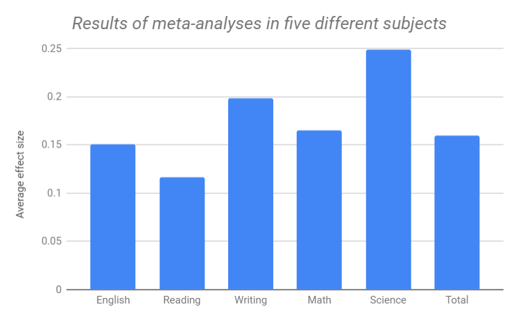
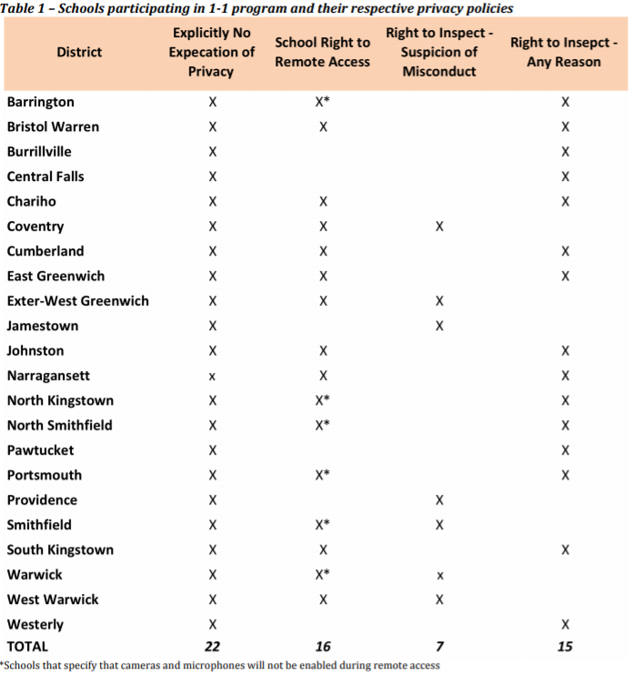
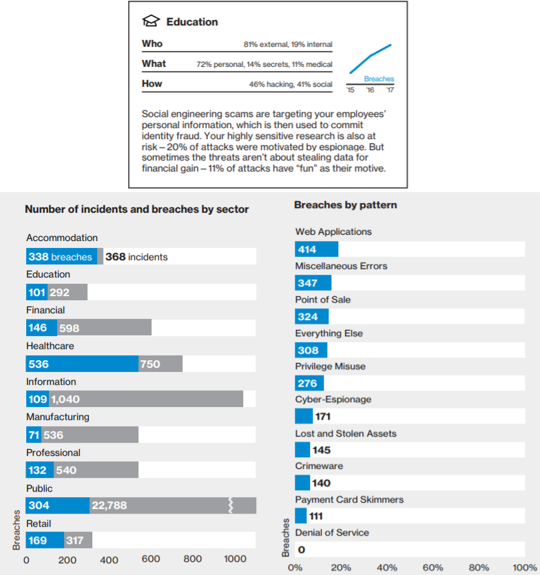

There have been many studies exploring one-to-one device programs. In a paper that looks at a number of such studies and aggregates the results, it is shown that within the programs it analysed students’ test scores in science, writing, math and English language arts improved significantly. Below is a graphic that shows the measured improvements relative to each other in different schools subjects.
Students also increased the amount that they wrote and edited their work. This is because of the natural ability for laptops to facilitate drafting, revising, and sharing writing. The decisive factor digital devices have over pen and paper is the nature of how work is stored. The file in memory can be easily changed, duplicated for distribution, and archived for reference.
Another interesting advantage of writing on digital platforms is that it can eliminate some grading bias based on the quality of handwriting of students. In a study focused on elementary school teachers that was based on many investigations over the last century, it was found that papers written in neater handwriting were consistently awarded higher scores than those papers written in poorer handwriting, regardless of the quality of the presented content. If digital devices were made accessible to every student then this specific grading bias could be effectively eliminated.
When technology integration programs were started, students improved their “21st Century skills” - their ability to access online information and other digital skills. This is becoming a necessary toolset for young students to be developing now that these skills are taken for granted at the University level.
In one example of K-8 technology deployment, a sixth grader was doing a project on the 1970’s and needed to interview 10 people of different ages. The child interviewed her family, but also created an online questionnaire and received data from an email group. The young student was able to learn to use digital research skills in the same way she will need to in her further education.
The previous example also shows how young students that have access to technology are able to express their creativity more. With greater access to digital technology it is easier for students to be content creators instead of content consumers.
With their own laptop students have access to a wider community than before. An example of software for young students that can be run on their device is ePALS, which has tools for “student-safe-email” and allows them to interact with people around the world of the same age. There is the ability to connect classes with other classes, or to be just like traditional pen-pals but with faster response time and the power of translation software. Young students can harness the global and communicative aspects of digital technology made possible by computer networking.
In one application the eyes and faces of students were tracked to keep them on task and encourage them when they got frustrated or distracted doing schoolwork. Another tracked the mouse patterns of students and learns whether or not they are on task when doing algebra. These sorts of programs could be extremely helping students develop grit and focus—and improve their grades, job prospects, and long-term health. Developing strategies to track and adapt to a student’s emotional needs could fill a gap in current educational methods.
When students are being provided devices from schools for free, problems can easily arise. A school in Rhode Island used webcams to take over 50,000 screenshots of students using their computers, some of them at home. The school claimed to retain ownership and use of the device at any time, similar to school lockers. The difference is that the locker is always on school property, but the laptop is not . Also the device can be used after school hours, when the responsibility of surveillance has been passed back off to parents. These situations require carefully crafted privacy policies that respect the students and their parents. Below is one of the photos taken from a webcam on a student’s device.
The chart below shows how in that school district, privacy with student's devices is widely mismanaged. In all the schools it is outright said there is no privacy, with varying degrees of severity as far as other breaches.
Another risk area is the student attitude and emotion tracking software on personal laptops mentioned earlier. This could allow behaviour modification of students to fit a certain ideal that limits their own freedom — whether intentional or not. The judgement of what this ideal student looks like is a massive responsibility. It would concerning if an individual with questionable personal or political views is making this choice for a whole school district. It raises the question — is there anyone who can be trusted to make such a choice and shape the future of so many?
Additionally, in cases where privacy is an issue the higher income students can bring their own devices where the lower income students cannot. Like in the webcam screenshot issue mentioned earlier or where files are subject to search because they are on school issued computers. In these cases the lower income students are at a disadvantage.
As more devices are added to a school or school district’s infrastructure, the number of places where things can go wrong increases. Security risk also comes from improper usage and training with the devices. According to a Verizon report on data breaches “Errors were at the heart of almost one in five (17%) breaches. That included employees sending an email to the wrong person”. Teachers without adequate training, and especially young students in K-8 schools would likely pose an even greater risk to network security that your average negligent employee. Either way, one-to-one programs could increase network vulnerability, especially considering the magnitude of the increase in devices in such a program.
Despite these factors, the same Verizon report says only 0.73% of all world wide cybersecurity incidents and data breaches recorded in 2018 were against educational organizations (Verizon 4). Maybe security in schools is not such a big deal, maybe they’re not commonly targeted, or maybe security will not be concern until one-to-one policies are widely implemented. The number of devices may be what separates schools from other companies at the present time.
If there are many more devices, there is also much more data that needs protection. This could be a student’s files, school records, grades, etc. Since there would be drastically more sensitive data being generated, the task to protect it becomes even more important. Not only would the amount of data increase, the number of places it is being stored could potentially increase as well. It is critical that when digital device programs are implemented that these factors are taken into account.
We need to adapt to the changing world and business environment. There appears to be positive effects associated with large scale integration of digital technology in classrooms provided that it is done properly, keeping in mind the many potential negatives. These negatives are either avoidable with enough planning, or must be accepted in order to reap the benefits.
American Civil Liberties Union of Rhode Island (ACLU). “HIGH SCHOOL NON CONFIDENTIAL: How School Loaned Computers May Be Peering Into Your Home.” June 2017.
Brown, June, Bryan, Jan & Brown, Ted. “Twenty-First Century Literacy and Technology in K-8 Classrooms.” Innovate: Journal of Online Education, vol. 1, no. 3, 2005, www.learntechlib.org/p/107300/
Goran, Ion. “Cyber Security Risks in Public High Schools.” CUNY Academic Works, 2017, https://academicworks.cuny.edu/cgi/viewcontent.cgi?article=1002&context=jj_etds
Herold, Benjamin. “How (and Why) Ed-Tech Companies Are Tracking Students' Feelings.” Education Week, Vol. 37, Issue 36, Pages 1, 14-15, June 20 2018, www.edweek.org/ew/articles/2018/06/12/how-and-why-ed-tech-companies-are-tracking.html
Morris, Kathryn J., "Does Paper Presentation Affect Grading: Examining the Possible Educational Repercussions of the Quality of Student Penmanship." Honors Theses, 30, 2014, https://digitalcommons.salemstate.edu/honors_theses/30
Verizon Wireless. “2018 Data Breach Investigations Report: Executive Summary.” 2018, https://enterprise.verizon.com/resources/reports/DBIR_2018_Report_execsummary.pdf
Zheng, Binbin, Warschauer, Mark, Lin, Chin-Hsi & Chang, Chi. “Learning in One-to-One Laptop Environments: A Meta-Analysis and Research Synthesis.” Review of Educational Research, Vol. 86, No. 4, pp. 1052–1084, 2016.